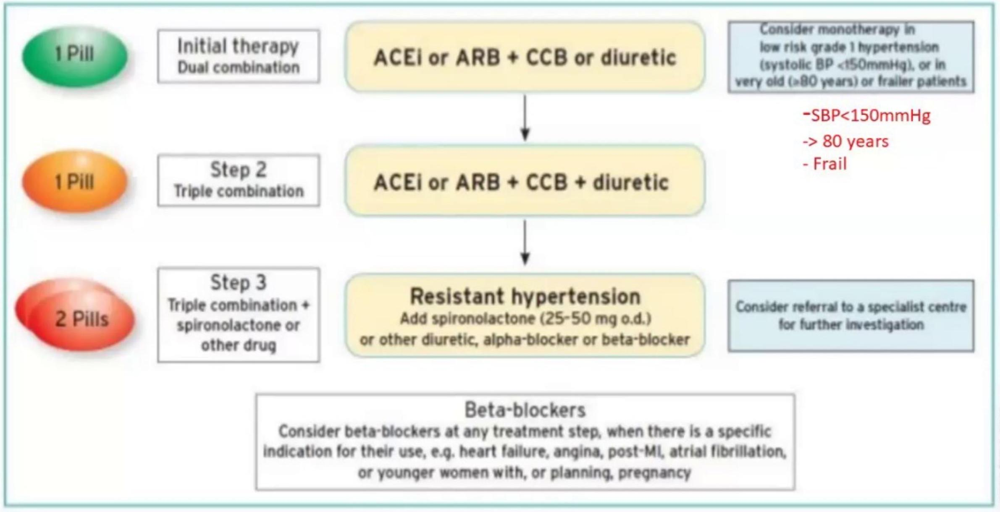
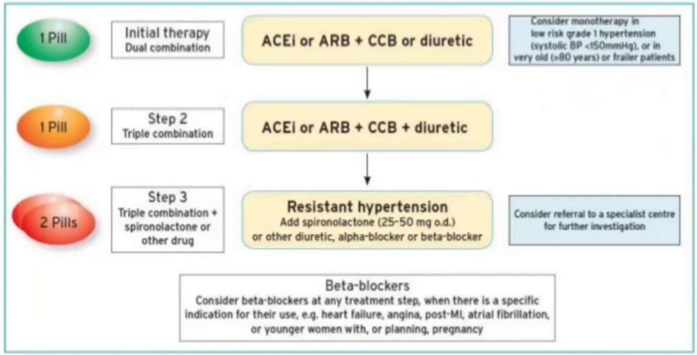
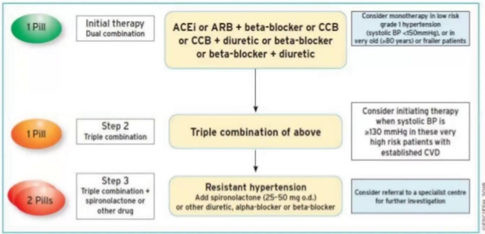
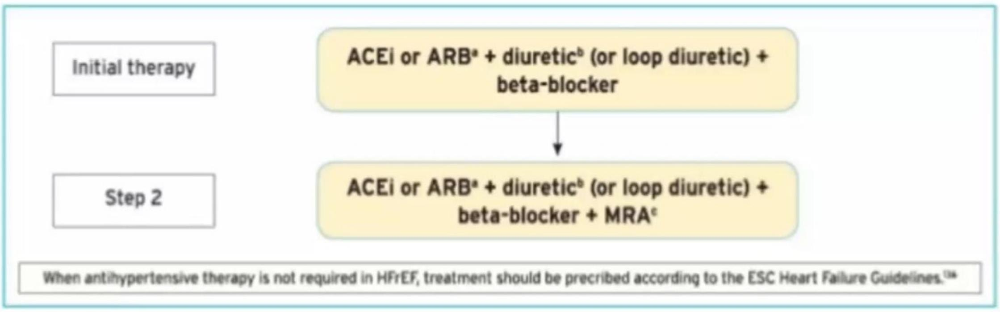
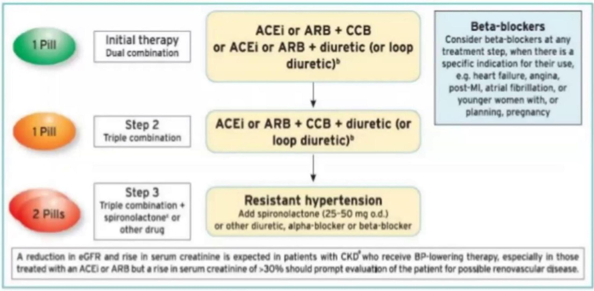
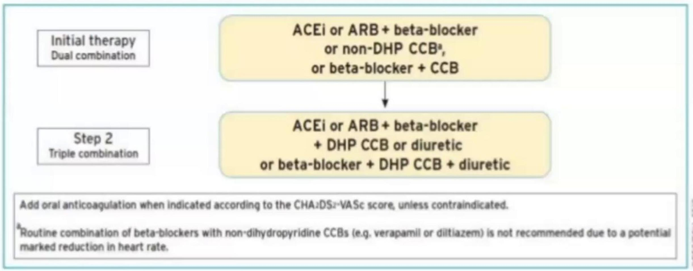

Drug Therapy and Management Strategies
Pharmacologic Treatment
Evidence suggests that reduction of the blood pressure by 5-6 mmHg can decrease the risk of stroke by 40%, of coronary heart disease by 15-20%, and reduces the likelihood of dementia, heart failure, and mortality from vascular disease.
The aim of treatment should be blood pressure control to <140/90 mmHg for most patients, and lower in certain contexts such as diabetes or kidney disease (some medical professionals recommend keeping levels below 120/80 mmHg). Each added drug may reduce the systolic blood pressure by 5-10 mmHg, so often multiple drugs are necessary to achieve blood pressure control.
Approach to Antihypertensive Treatment
- Increasing dose of initial monotherapy.
- Monotherapy substitution.
- "Stepped - care" approach (monotherapy with subsequent addition of other drugs).
- Initial two drug combination treatment.
- Use of single pill combinations.
Rationale for Initial Two-Drug Combination Therapy
- Greater BP reduction even vs maximum dose monotherapy.
- Reduced heterogeneity of the BP response to initial therapy.
- Steeper dose-response relationship with treatment uptitration.
- No/small increase in risk of hypotensive episodes (even in grade I hypertension).
- More frequent BP control after 1 year
- Better adherence to treatment
- Reduced therapeutic inertia
- Reduce CV events (grade I hypertension, HOPE-3)
Classes of Antihypertensive Drugs
| Drug Class | Agents of Choice | Comments |
|---|---|---|
| Diuretics | HCTZ 12.5-50 mg, chlorthalidone 12.5-25 mg, indapamide 1.25-2.5 mg triamterene 100 mg. K+ sparing - spironolactone 25-50 mg, amiloride 5-10 mg, triamterene 100 mg. furosemide 20-80 mg twice daily, torsemide 10-40 mg |
Monitor for hypokalemia. Most SE are metabolic in nature. Most effective when combined w/ ACEI. Stronger clinical evidence w/chlorthalidone. Spironolactone - gynecomastia and hyperkalemia. Loop diuretics may be needed when GFR <40 mL/min |
| ACEI/ARB | ACEI: lisinopril, benazapril, fosinopril and quinapril 10-40 mg, ramipril 510 mg , trandolapril 2-8 mg. ARB: candesartan 8-32 mg, valsartan 80-320 mg, losartan 50-100 mg, olmesartan 20-40 mg, telmisartan 20-80 mg |
SE: Cough (ACEI only), angioedema (more with ACEI), hyperkalemia. Losartan lowers uric acid levels; candesartan may prevent migraine headaches |
| Beta-Blockers | metoprolol succinate 50-100 mg and tartrate 50-100 mg twice daily, nebivolol 5-10 mg, propranolol 40-120 mg twice daily, carvedilol 6.25-25 mg twice daily, bisoprolol 5-10 mg, labetalol 100-300 mg twice daily, | Not first line agents - reserve for post-MI/CHF. Cause fatigue and decreased heart rate. Adversely affect glucose; mask hypoglycemic awareness |
| Calcium channel blockers | Dihydropyridines: amlodipine 5-10 mg, nifedipine ER 30-90 mg. Non-dihydropyridines: diltiazem ER 180-360 mg, verapamil 80-120 mg 3 times daily or ER 240-480 mg |
Cause edema; dihydropyridines may be safely combined w/ B-blocker. Non-dihydropyridines reduce heart rate and proteinuria |
| Vasodilators | hydralazine 25-100 mg twice daily, minoxidil 5-10 mg. terazosin 1-5 mg, doxazosin 1-4 mg given at bedtime |
Hydralazine and minoxidil may cause reflex tachycardia and fluid retention - usually require diuretic + B-blocker. Alpha-blockers may cause orthostatic hypotension |
| Centrally-acting Agents | clonidine 0.1-0.2 mg twice daily, methyldopa 250-500 mg twice daily. guanfacine 1-3 mg |
Clonidine available in weekly patch formulation for resistant hypertension |
| Direct renin inhibitors | aliskiren (Tekturna) |
Thiazide-type diuretics should be used as initial therapy for most patients with hypertension, either alone or in combination with one of the other classes (ACEIs, ARBs, BBs, CCBs). Diuretics enhance the antihypertensive efficacy of multidrug regimens, can be useful in achieving BP control, and are more affordable than other antihypertensive agents. Despite these findings, diuretics remain underutilized.
Beta-1 Selective Beta-blockers
These are possibly safer in patients with COPD, asthma, diabetes, and peripheral vascular disease:
- metoprolol
- bisoprolol
- betaxolol
- acebutolol
Treatment Strategies and Algorithms
Core Drug Treatment Strategy for Uncomplicated Hypertension
Drug Treatment Strategy for Hypertension + Diabetes Mellitus
Drug Treatment Strategy for Hypertension + Coronary Artery Disease (CAD)
Drug Treatment Strategy for Hypertension + Heart Failure with Reduced EF
Drug Treatment Strategy for Hypertension + Chronic Kidney Disease (CKD)
Drug Treatment Strategy for Hypertension + Atrial Fibrillation (AF)
Management in Special Populations
Ischemic Heart Disease (IHD)
Ischemic heart disease (IHD) is the most common form of target organ damage associated with hypertension. In patients with hypertension and stable angina pectoris, the first drug of choice is usually a BB; alternatively, long-acting CCBs can be used. In patients with acute coronary syndromes (unstable angina or myocardial infarction), hypertension should be treated initially with BBs and ACEIs, with addition of other drugs as needed for BP control. In patients with postmyocardial infarction, ACEIs, BBs, and aldosterone antagonists have proven to be most beneficial. Intensive lipid management and aspirin therapy are also indicated.
Heart Failure (HF)
Heart failure (HF), in the form of systolic or diastolic ventricular dysfunction, results primarily from systolic hypertension and IHD. Fastidious BP and cholesterol control are the primary preventive measures for those at high risk for HF. In asymptomatic individuals with demonstrable ventricular dysfunction, ACEIs and BBs are recommended. For those with symptomatic ventricular dysfunction or end-stage heart disease, ACEIs, BBs, ARBs and aldosterone blockers are recommended along with loop diuretics.
Diabetic Hypertension
Combinations of two or more drugs are usually needed to achieve the target goal of <130/80 mmHg. Thiazide diuretics, BBs, ACEIs, ARBs, and CCBs are beneficial in reducing CVD and stroke incidence in patients with diabetes. ACEI- or ARB-based treatments favorably affect the progression of diabetic nephropathy and reduce albuminuria and ARBs have been shown to reduce progression to macroalbuminuria.
Chronic Kidney Disease (CKD)
In people with chronic kidney disease (CKD), as defined by either (1) reduced excretory function with an estimated GFR below 60 ml/min per 1.73 m2 (corresponding approximately to a creatinine of >1.5 mg/dL in men or >1.3 mg/dL in women) or (2) the presence of albuminuria (>300 mg/day or 200 mg albumin/g creatinine), therapeutic goals are to slow deterioration of renal function and prevent CVD. Hypertension appears in the majority of these patients, and they should receive aggressive BP management, often with three or more drugs to reach target BP values of <130/80 mmHg. ACEIs and ARBs have demonstrated favorable effects on the progression of diabetic and non diabetic renal disease. A limited rise in serum creatinine of as much as 35 percent above baseline with ACEIs or ARBs is acceptable and is not a reason to withhold treatment unless hyperkalemia develops. With advanced renal disease (estimated GFR <30 ml/min 1.73 m2, corresponding to a serum creatinine of 2.5-3 mg/dL), increasing doses of loop diuretics are usually needed in combination with other drug classes.
Cerebrovascular Disease
The risks and benefits of acute lowering of BP during an acute stroke are still unclear; control of BP at intermediate levels (approximately 160/100 mmHg) is appropriate until the condition has stabilized or improved. Recurrent stroke rates are lowered by the combination of an ACEI and thiazide-type diuretic.
Hypertension in Women
Oral contraceptives may increase BP, and the risk of hypertension increases with duration of use. Women taking oral contraceptives should have their BP checked regularly. Development of hypertension is a reason to consider other forms of contraception. In contrast, menopausal hormone therapy does not raise BP. Women with hypertension who become pregnant should be followed carefully because of increased risks to mother and fetus. Methyldopa, BBs, and vasodilators are preferred medications for the safety of the fetus. ACEI and ARBs should not be used during pregnancy because of the potential for fetal defects and should be avoided in women who are likely to become pregnant. Preeclampsia, which occurs after the 20th week of pregnancy, is characterized by new-onset or worsening hypertension, albuminuria, and hyperuricemia, sometimes with coagulation abnormalities. In some patients, preeclampsia may develop into a hypertensive urgency or emergency and may require hospitalization, intensive monitoring, early fetal delivery, and parenteral antihypertensive and anticonvulsant therapy.
Potential Favorable and Unfavorable Effects
Favorable: Thiazide-type diuretics are useful in slowing demineralization in osteoporosis. BBs can be useful in the treatment of atrial tachyarrhythmias/ fibrillation, migraine, thyrotoxicosis (short term), essential tremor, or perioperative hypertension. CCBs may be useful in Raynaud's syndrome and certain arrhythmias. Alpha-blockers may be useful in prostatism.
Unfavorable: Thiazide diuretics should be used cautiously in patients who have gout or who have a history of significant hyponatremia. BBs should generally be avoided in individuals who have asthma, reactive airways disease, or second or third degree heart block. ACEIs and ARBs should not be given to women likely to become pregnant and are contraindicated in those who are. ACEIs should not be used in individuals with a history of angioedema. Aldosterone antagonists and potassium-sparing diuretics can cause hyperkalemia and should generally be avoided in patients who have serum potassium values more than 5.0 mEq/L while not taking medications.
Resistant Hypertension
Resistant hypertension is the failure to reach goal BP in patients who are adhering to full doses of an appropriate three-drug regimen that includes a diuretic.
Causes
- Improper BP Measurement
- Identifiable Causes of Hypertension.
- Volume Overload and Pseudo tolerance
- - Excess sodium intake
- - Volume retention from kidney disease
- - Inadequate diuretic therapy
- Drug-Induced or Other Causes
- - Non adherence
- - Inadequate doses
- - Inappropriate combinations
- - Nonsteroidal anti-inflammatory drugs; cyclooxygenase 2 inhibitors
- - Cocaine, amphetamines, other illicit drugs
- - Sympathomimetics (decongestants, anorectics)
- - Oral contraceptives
- - Adrenal steroids
- - Cyclosporine and tacrolimus
- - Erythropoietin
- - Licorice (including some chewing tobacco)
- - Selected over-the-counter dietary supplements and medicines (e.g., ephedra, ma haung, bitter orange)
- Associated Conditions
- - Obesity
- - Excess alcohol intake
Hypertensive Urgencies and Emergencies
A hypertensive emergency is severe hypertension with acute impairment of an organ system (especially the central nervous system, cardiovascular system and/or the renal system) and the possibility of irreversible organ-damage. In case of a hypertensive emergency, the blood pressure should be lowered aggressively over minutes to hours with an antihypertensive agent. In most cases, the administration of an intravenous sodium nitroprusside injection which has an almost immediate antihypertensive effect is suitable but in many cases not readily available. In less urgent cases, oral agents like captopril, clonidine, labetalol, prazosin, which have all a delayed onset of action by several minutes compared to sodium nitroprusside, can also be used.
It is also important that the blood pressure is lowered not too abruptly, but smoothly. The diagnosis of a hypertensive emergency is not only based on the absolute level of blood pressure, but also on the individual regular level of blood pressure before the hypertensive crisis. Individuals with a history of chronic hypertension may not tolerate a "normal" blood pressure.